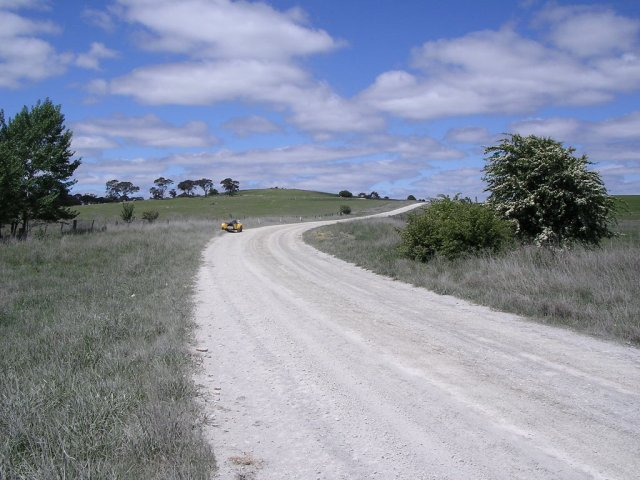
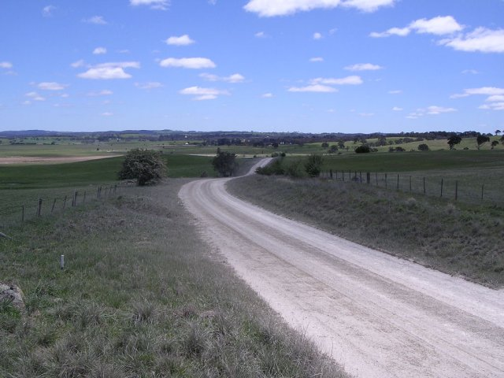
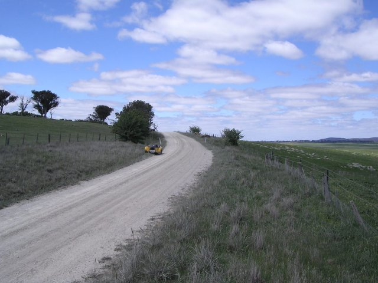
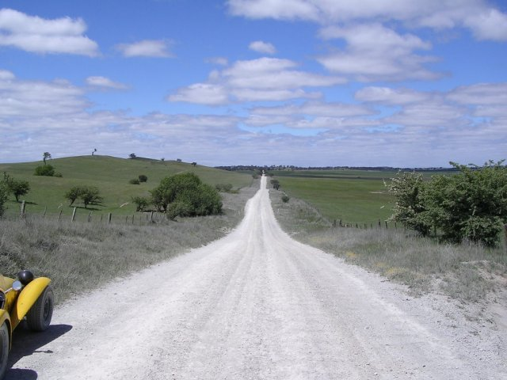
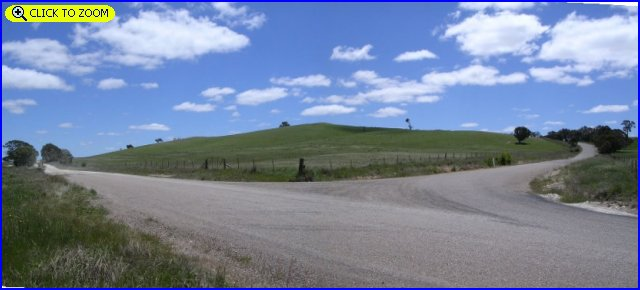
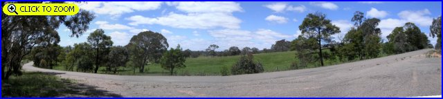

Numbers on the map represent the location where the photographs were taken. Scroll down to view the photographs.
Parkesbourne - Photographs #1 to #6
|| Contents || Photo's 1-6 | Photo's 7-12 || Home ||
Numbers on the map represent the location where the photographs were taken. Scroll
down to view the photographs.
Return to racingcircuits.net's Photo Archive Main Index

1 - Present day road.

2 - Looking back down the hill. Although the road now sweeps right and
left here to the west of Parkesbourne Hill, in 1929/30 it went straight ahead at this
point, making two 90 degree right and left turns.

3 - 180° from the previous photo.

4 - Just over the crest from the previous photo, the surface is dirt down
to the next intersection

5 - Sealed road from here to Wesley Road.
[Click here to Zoom In]

6 - Fast sweeping section [Click here to Zoom In]
Photographs and Text ©Neil Fackerell. Reproduced here with kind permission.